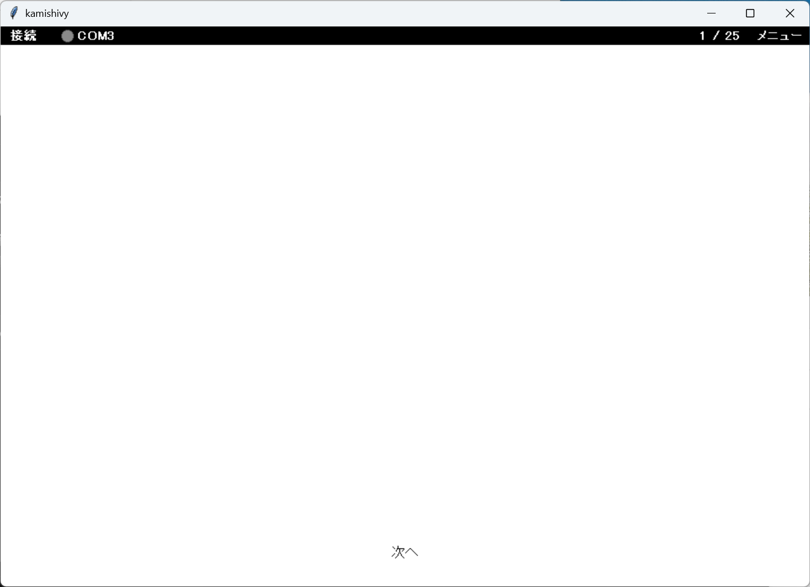
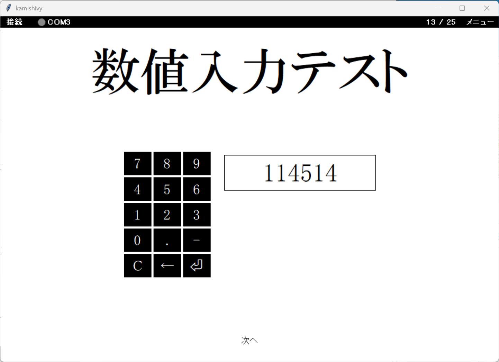
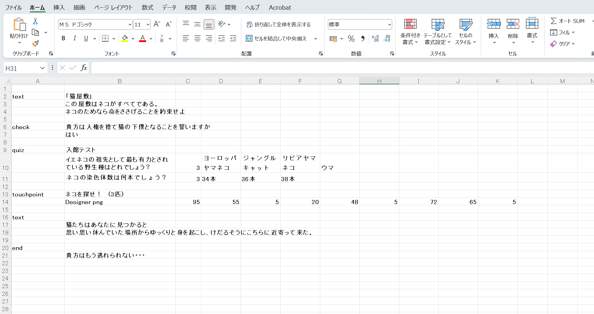
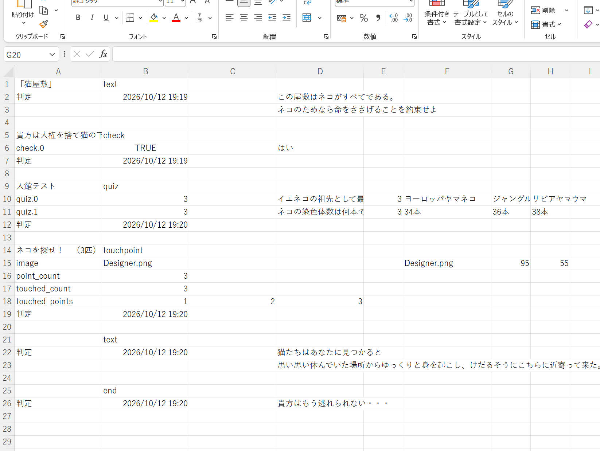

1. プログラム
アプリの本体です。UIを表示し、「次へ」を押すことで次の UI を表示します。通信・記録・デザインも担当します。 配布版では exe が該当します。対応するソースコードとしては main.py だけではなく app 内のコードが含まれます。

UI を表示しないとこんな感じ。画面のデザインも設定できます。(画面はデザイン済みの画面です)
kamishivy は、次の4つで動きます。
プログラムが EXCEL(CUI) に書かれた UI を上から順に読み込んで表示します。UIには、文章を出すもの、チェックするもの、数値や文字を入れるもの、通信の値を表示するものなどを準備してあります。自分で作成することも可能です。
各 UI は Excel（CUI）の内容を読んでいるので、Excel を編集するだけで表示内容を変えられます。
プログラム動作中のUIに打ち込んだ数字やボタンを押した時間などはlog として残ります。
見た目は、プログラムのメニュー「表示のカスタマイズ」から変えられます。
アプリの本体です。UIを表示し、「次へ」を押すことで次の UI を表示します。通信・記録・デザインも担当します。 配布版では exe が該当します。対応するソースコードとしては main.py だけではなく app 内のコードが含まれます。

UI を表示しないとこんな感じ。画面のデザインも設定できます。(画面はデザイン済みの画面です)
ウィンドウの中央に表示する画面のことです。文字を表示することのできる UI もありますし、計算機の UI もあります。
特定の条件を満たすまで「次へ」を押せなくすることも可能です。

新しく表示された真ん中部分が UI。画像は数値入力用のUI。
どの画面を、どの順で、どんな文字を表示するかなどを書いた表です。基本は Excel（cui.xlsx）。CSV でも読めます。
1列目が UI 名、その右隣がタイトル、次の行から引数です。

CUI の中身。UI の順番(A列)と表示する内容(B列以降)が書かれている。
各画面の入力や判定を CSV に残します。保存先は設定で変えられます。 終了時にも、その時点までの記録を書き出します。

入力やボタンを押した時刻などの全記録です。読みにくいので読み取り機能の充実など考えていきます。
戻る